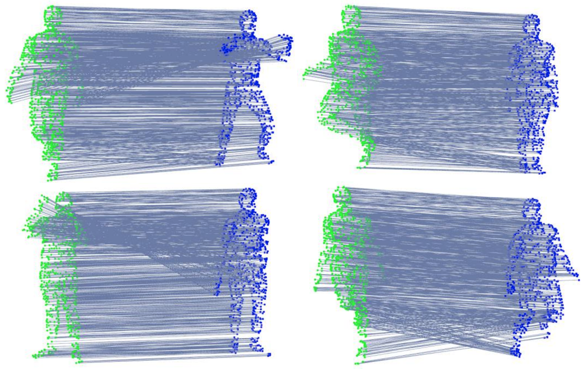

1School of Electronics and Information, Northwestern Polytechnical University, Xi'an, China
Existing learning-based point feature descriptors are usually task-agnostic, which pursue describing the individual 3D point clouds as accurate as possible. However, the matching task aims at describing the corresponding points consistently across different 3D point clouds. Therefore these too accurate features may play a counterproductive role due to the inconsistent point feature representations of correspondences caused by the unpredictable noise, partiality, deformation, etc., in the local geometry. In this paper, we propose to learn a robust task-specific feature descriptor to consistently describe the correct point correspondence under interference. Born with an E ncoder and a D ynamic F usion module, our method EDFNet develops from two aspects. First, we augment the matchability of correspondences by utilizing their repetitive local structure. To this end, a special encoder is designed to exploit two input point clouds jointly for each point descriptor. It not only captures the local geometry of each point in the current point cloud by convolution, but also exploits the repetitive structure from paired point cloud by Transformer. Second, we propose a dynamical fusion module to jointly use different scale features. There is an inevitable struggle between robustness and discriminativeness of the single scale feature. Specifically, the small scale feature is robust since little interference exists in this small receptive field. But it is not sufficiently discriminative as there are many repetitive local structures within a point cloud. Thus the resultant descriptors will lead to many incorrect matches. In contrast, the large scale feature is more discriminative by integrating more neighborhood information. But it is easier to be disturbed since there is much more interference in the large receptive field. Compared with the conventional fusion strategy that handles multiple scale features equally, we analyze the consistency of them to judge the clean ones and perform larger aggregation weights on them during fusion. Then, a robust and discriminative feature descriptor is achieved by focusing on multiple clean scale features. Extensive evaluations validate that EDFNet learns a task-specific descriptor, which achieves state-of-the-art or comparable performance for robust matching of 3D point clouds.
Motivation of our proposed dynamic fusion strategy. There is an inevitable struggle between robustness and discriminativeness of single scale feature description. Due to repetitive minor structures, the small scale descriptors are not discriminative enough but are robust due to little interference. By contrast, the large receptive field improves the discriminativeness of large scale feature, which is easy to be affected by many disturbers. Existing multi-scale fusion methods usually utilize each scale equally, which cannot improve the robustness as the disturbers are also encoded to the final descriptor. Thus, we design a dynamic fusion module, which recognizes and selects consistent and clean ones dynamically during the fusion. By focusing on multiple clean scale features, it achieves a good balance between discriminativeness and robustness. Here, we provide a toy example, where yellow denotes the current point (i.e. $x$, $y$) and red is noise, gray parallelograms indicate different receptive fields. Obviously, the features of the first 3 scales $F^1_x$, $F^2_x$, $F^3_x$ and $F^1_y$, $F^2_y$, $F^3_y$ are consistent in describing similar local geometry (a plane). However, the last scale features $F^4_x$ and $F^4_y$ show deviation due to the noise and deformation. Our designed dynamic fusion module enforces the final feature $F^∗_x$, $F^∗_y$ approach to the first 3 scale features while marginalizing the last scale feature.
Illustration of our proposed EDFNet architecture. Given two point clouds, the CT-encoder network is used to extract different scale features, where convolution and Transformer are employed to extract local information of the current point cloud and the repetitive structure information of paired point clouds, respectively. Then, we design a dynamic fusion module to fuse these different scale features to the final feature descriptor. The entire network is trained with a metric learning loss. Note that the robot indicates the Transformer module.
Feature matching recall at $\tau_1$=10cm, $\tau_2$=5% on the 3DMatch dataset. AVG and STD indicate the average feature matching recall and its standard deviation. Dim. indicates the dimension of the final feature.
Matching results of our method on non-rigid point clouds. Green indicates the source point cloud and blue indicates the target. Lines present the matching results, where our method achieves advanced performance.
@ARTICLE{zhang_tsd_tcsvt_2022,
title={Learning a Task-specific Descriptor for Robust Matching of 3D Point Clouds},
author={Zhang, Zhiyuan and Dai, Yuchao and Fan, Bin and Sun, Jiadai and He, Mingyi},
journal={IEEE Transactions on Circuits and Systems for Video Technology},
year={2022},
volume={32},
number={12},
pages={8462-8475}}